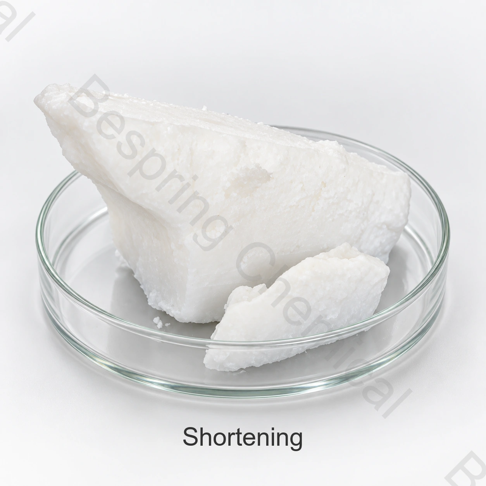

هوية المنتج والدرجة
حدّد النوع والشكل والتطبيق والكمية والتعبئة والوجهة والمستندات المطلوبة.
مكوّن غذائي · توريد حسب المواصفة
دهون التقصير نظام دهني صلب أو شبه صلب يُختار للمخبوزات وتطبيقات غذائية مناسبة بحسب اللدونة والتهوية وسلوك الانصهار والتصنيع. تختلف التركيبة ومصادر الدهون والخصائص بين الدرجات.

صورة المنتج · أكد الدرجة والتعبئة عند الطلب
حدّد الدرجة المطلوبة والتطبيق والكمية والتعبئة وبلد الوجهة والمستندات اللازمة.
الدرجةبدرجة غذائية، رهناً بمؤهلات المصدر
المواصفةالوثيقة الحالية المتاحة من المبيعات
التعبئةتُحدد في عرض التوريد
الدليلالمواصفة الحالية للدفعات المعروضة
نبذة عن المنتج
دهون التقصير نظام دهني صلب أو شبه صلب يُختار للمخبوزات وتطبيقات غذائية مناسبة بحسب اللدونة والتهوية وسلوك الانصهار والتصنيع. تختلف التركيبة ومصادر الدهون والخصائص بين الدرجات.
تُقيّم الملاءمة وفق الدرجة والمصدر والوصفة الكاملة والمعالجة ومتطلبات سوق الوجهة. تُحدد شروط التوريد في مواصفة الشراء المتفق عليها وشهادة تحليل الدفعة.
دليل المشتريات الصناعية
استخدم معايير الشراء التالية عند مقارنة الموردين والمصنعين وعروض التوريد بالجملة.
حدّد النوع والشكل والتطبيق والكمية والتعبئة والوجهة والمستندات المطلوبة.
اطلب عرضاً يحدد المصدر والمواصفة وشروط Incoterms والوجهة وموعد التسليم المطلوب.
اذكر الوصفة وظروف المعالجة والوظيفة المستهدفة واختبارات قبول الغذاء النهائي.
قارن الهوية وطرق الاختبار وشهادة التحليل وصحيفة بيانات السلامة والتتبع والشهادات ذات الصلة وإدارة التغييرات.
تقييم التطبيقات
تُقيّم التطبيقات حسب الغذاء والدرجة وظروف التصنيع؛ ولا تمثل توصية بجرعة أو ضماناً للأداء.
حدّد التطبيق؛ لا يُفترض أن درجة واحدة تناسب جميع الاستخدامات. قارن النكهة والأكسدة والأداء تحت ظروف التسخين الفعلية.
قيّم النكهة والمظهر وسلوك الاستحلاب في الوصفة الكاملة، مع درجة التخزين واختبار الصلاحية المطلوبين.
اختبر القوام والتبلور وسلوك المعالجة والتوافق في نظام الدهون الكامل قبل تغيير المصدر أو الدرجة.
حدّد العملية والهدف الحسي وشكل التوريد، ثم اختبر المصدر المختار في تجربة إنتاج ممثلة.
الاختيار التقني
حدّد المصدر النباتي وحالة التكرير وأي معالجة إضافية في مواصفة الشراء.
اطلب الاختبارات ذات الصلة وطرقها، وحدّد معايير القبول عند الاستلام والتخزين حسب التطبيق.
اطلب أدلة خاصة بالمصدر لكل ادعاء مطلوب؛ اسم الزيت وحده لا يثبت اعتماد سلسلة التوريد.
اتفق على العبوة وأي جو وقائي ومدة الصلاحية وشروط التخزين وفق بيانات الدرجة المعروضة.
المواصفة والمستندات
اطلب المواصفة الحالية وورقة البيانات الفنية (TDS) الخاصة بالمصدر، مع طرق الاختبار وأساس النتائج وشهادة تحليل الدفعة.
اطلب المواصفة الحالية وشهادة التحليل ونشرة السلامة والمستندات الخاصة بالمصدر.
التحقق من صحة الأغذية الواجبة التطبيق، والأصل، والحساسية، وكوشر، وهالال، وشهادات الموقع للصف الدقيق والمصدر.
راجع معيار الزيوت النباتية المسماة (CXS 210-1999)، مع مراعاة القواعد السارية للغذاء النهائي في سوق الوجهة.
مذكرة الامتثال: تُراجع شروط الاستخدام حسب فئة الغذاء وسوق الوجهة.
التخزين والمناولة
أسئلة المشتري
دهون التقصير نظام دهني صلب أو شبه صلب يُختار للمخبوزات وتطبيقات غذائية مناسبة بحسب اللدونة والتهوية وسلوك الانصهار والتصنيع. تختلف التركيبة ومصادر الدهون والخصائص بين الدرجات.
نظام دهني مُصاغ؛ تركيب محدد؛ لا يوجد INS واحد؛ دهن صلب أو شبه صلب. تُطابق الهوية مع الدرجة المعروضة في مواصفة الشراء.
اطلب المواصفة الحالية الخاصة بالمصدر والدرجة وطرق الاختبار وأساس النتائج وحدود القبول المتفق عليها.
اطلب TDS وSDS وشهادة تحليل نموذجية وشهادة الدفعة وبيانات المصدر والحساسية والشهادات السارية ذات الصلة بالمنتج والموقع.
اذكر النوع والدرجة والشكل والتطبيق والمواصفة والكمية والتعبئة والوجهة والمستندات وموعد التسليم المطلوب.
الموارد ذات الصلة
تصفح مجموعة المكونات الغذائية وبياناتها الفنية
يناقش المواصفات الخاصة والوثائق والعينة والمتطلبات التجارية.
تعرّف إلى خدمات التوريد ودعم التصدير للمشترين الدوليين للمكونات الغذائية.
توريد حسب المواصفة
حدّد الدرجة والنوع والتطبيق والمتطلبات الفنية والكمية والتعبئة والوجهة والمستندات اللازمة.
حدد الدرجة وسوق الوجهة حتى نتمكن من تأكيد الوثائق المتاحة لطلبك.
المرجع الخارجي ليس شهادة دفعة أو مواصفات منتج من Bespring.